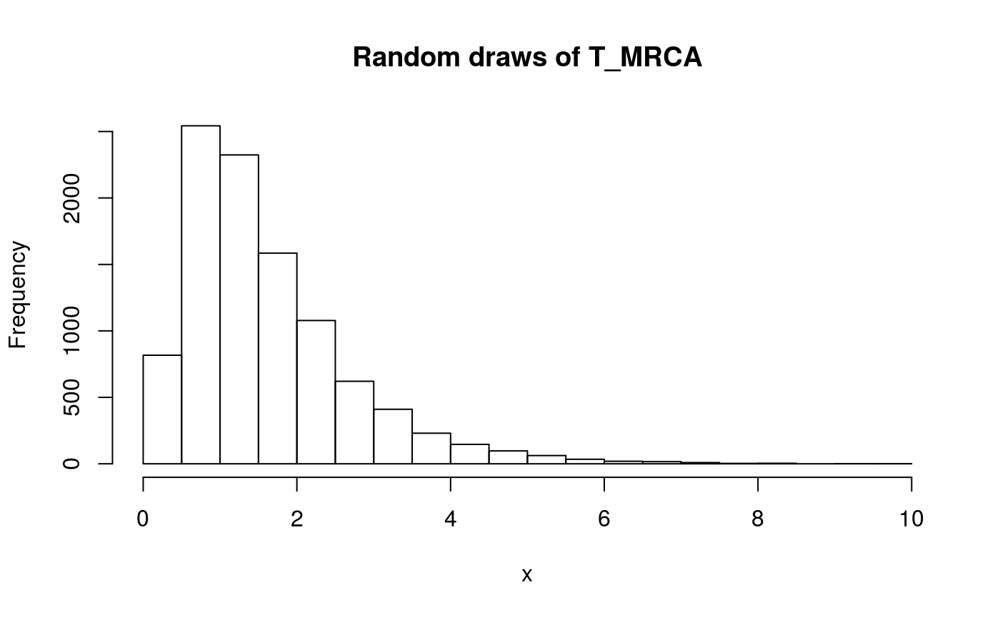
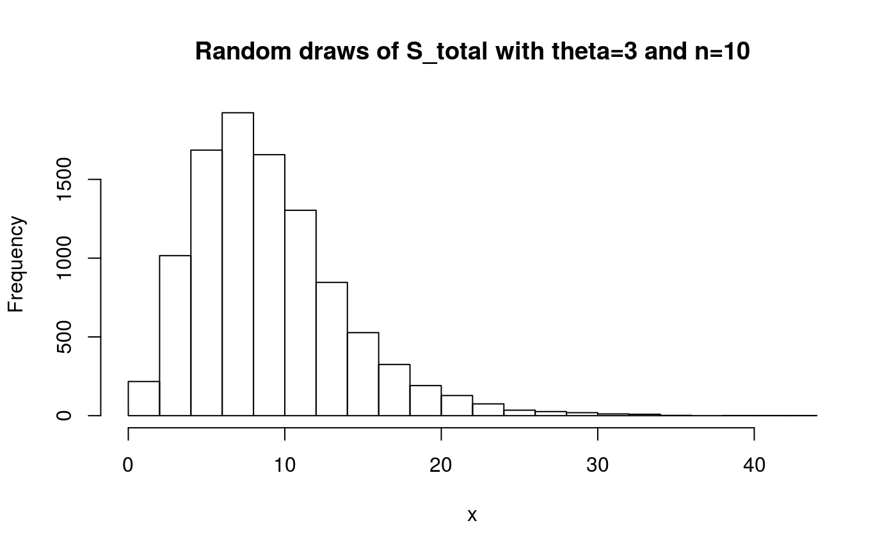

ticphasetype is useful for representing classical statistics in population genetics by means of phase-type theory. This provides additional flexibility and efficiency for computing and understanding these statistics at the finest level. Do not hesitate to run ?ticphasetype for a quick summary of the available functions, or to open the help files for the individual functions. There is also a brief description of both continuous and discrete phase-type distributions.
In an evolutionary tree the time until two sequences coalesce \(T_i\) can be measured in number of generations \(R_i\) divided by the population size \(N\), this is, \(T_i=R_i/N\). \(T_i\) can easily be proven to approximate to an exponential distribution with rate \(\binom{i}{2}\).
In order to understand the evolutionary history of sequences two additional quantities can be defined –namely the time until the most recent common ancestor \(T_{MRCA}\) and the total tree length \(T_{Total}\). \(T_{MRCA}\) will simply be the sum of all times until two sequences coalesce, in other words \(T_{MRCA}=T_n+T_{n-1}+...+T_2\), where \(T_i\sim\text{exp}(\binom{i}{2})\). \(T_{Total}\), on the other hand, takes into account the length of all possible branches, so \(T_{Total}=nT_n+(n-1)T_{n-1}+...+2T_2\) and, thus, \(iT_i\sim \text{exp}(\binom{i-1}{2})\).
The mean and variance of these two quantities can be derived relatively easily. Defining their distribution, however, has proven to be more challenging since both \(T_{MRCA}\) and \(T_{Total}\) are sums of independent exponentially distributed variables with different rates. Their distribution can be computed as a series of convolutions, but their formulation, application and interpretation might be challenging for the average population geneticist.
Instead, we can think of the sum of exponential distributions as a continuous-time Markov chain, where coalescent events are represented as Markov jumps with rate \(T_i\) for \(T_{MRCA}\) and \(iT_i\) for \(T_{Total}\). The Markov chain will end with an absorbing state, which in both cases will be the MRCA.
The Markov chain can be represented using phase-type theory, where the jump rates are defined with a sub-intensity matrix \(T\) and the initial distribution will be defined as a row vector \(\pi\). If we define \(\tau\) as the smallest time (or length) to reach the absorbing state, then \(\tau\sim PH(\pi,T)\). This continuous phase-type distribution has well-documented and easy-to-implement formulas for the expectation, the variance, the survival function, the distribution function and the density function. Moreover, since both \(\pi\) and \(T\) can easily be speficied, we can represent evolutionary histories that do not follow the standard coalescent model and still use the same phase-type formulas.
ticphasetype contains an efficient implementation of continuous phase-type distributions. It has a user-friendly interface for creating phase-type representations of \(T_{MRCA}\) and \(T_{Total}\) under the standard coalescent model, but it also allows the user to specify their own sub-intensity matrix and initial probabilities for a more flexible implementation.
A cont_phase_type class representing a continuous phase-type distribution for \(T_{MRCA}\) can be generated using cont_phase_type(). For example, when n=5:
There are a number of methods associated with the cont_phase_type, such as:
\(T_{Total}\) can also be represented using the cont_phase_type class:
Moreover, the height of an evolutionary tree can also be represented by a user-defined sub-intensity matrix. This is specially useful if the model does not follow Kingman’s n–coalescent, but other coalescent models such as the psi-coalescent or the beta-coalescent. As an example, an arbitrary sub-intensity matrix can be generated:
n=5
subint_arbit <- matrix(0, nrow = n-1, ncol = n-1)
for (i in 1:(n-1)) {
for (j in 1:(n-1)) {
if (j>i) {
subint_arbit[i,j] <- runif(1, 1, 10)
}
}
subint_arbit[i,i] <- -sum(subint_arbit[i,])
}
subint_arbit[n-1,n-1] <- -1subint_arbit
#> [,1] [,2] [,3] [,4]
#> [1,] -16.77763 6.516313 7.696890 2.564430
#> [2,] 0.00000 -11.832978 6.306856 5.526122
#> [3,] 0.00000 0.000000 -5.070151 5.070151
#> [4,] 0.00000 0.000000 0.000000 -1.000000This matrix can be supplied to the cont_phase_type() generator function, together with optional initial probabilities:
T_arbit_ph <- cont_phase_type(subint_mat = subint_arbit)
#> Warning in cont_phase_type(subint_mat = subint_arbit): The initial
#> probability vector is automatically generated.If the initial probabilities are not supplied (as is the case above), then cont_phase_type() automatically generates a vector of initial probabilities as \(\pi=(1,0,...,0)\) and raises a warning message.
We can apply the methods cont_phase_type class methods for this new user-tailored phase-type distribution:
summary(T_arbit_ph)
#>
#> Subintensity matrix:
#> [,1] [,2] [,3] [,4]
#> [1,] -16.77763 6.516313 7.696890 2.564430
#> [2,] 0.00000 -11.832978 6.306856 5.526122
#> [3,] 0.00000 0.000000 -5.070151 5.070151
#> [4,] 0.00000 0.000000 0.000000 -1.000000
#>
#> Initial probabilities:
#> [,1] [,2] [,3] [,4]
#> [1,] 1 0 0 0
#>
#> Defect:
#> [1] 0
#>
#> Mean: 1.223737
#>
#> Variance: 1.040859ticphasetype also includes the density function (dphtype()), quantile function (qphtype()), distribution function (pphtype()) and random draw generator (rphtype()) for the continuous phase-type distribution:
x <- seq(0,10,0.1)
y <- dphtype(x, T_MRCA_ph)
plot(x, y, type = 'l')
lines(x, y)
title('Density function of T_MRCA')x <- seq(0,0.99,0.01)
y <- qphtype(x, T_MRCA_ph)
plot(x, y, type = 'l')
lines(x, y)
title('Quantile function of T_MRCA')x <- seq(0,6,0.1)
y <- pphtype(x, T_MRCA_ph)
plot(x, y, type = 'l')
lines(x, y)
title('Distribution function of T_MRCA')
Some quantities in population genomics are discrete, such as the total number of segregating sites \(S_{total}\) or other statistics related to the site-frequency spectrum (singletons, doubletons, tail statistic, etc.). Representing the site-frequency spectrum, or SFS, can be challenging if the sample size is large, if the data does not follow Kingman’s coalescence or if we are trying to estimate the mutation parameter \(\theta\) using non-standard estimators.
Luckily, all these quantities can be represented using discrete phase-type theory. Similar to the continuous phase-type distribution being a generalization of exponentially distributed variables, the discrete phase-type distribution can be seen as a generalization of various geometric distributions. Each state in the continuous phase-type distribution will represent a stochastic process, such that the time until absorption of a random variable (\(\tau\)) follows an absorbing Markov chain. In this case we say that \(\tau+1\sim DPH(\pi, T)\), where \(T\) is the sub-intensity matrix that gathers the transition rates and \(\pi\) is the vector of initial probabilities.
The discrete phase-type representation of \(S_{total}\) can be built from the continuous phase-type representation of the total branch length. Folllowing theorem 3.5 in Hobolth et. al (2019), the total branch length can be discretized if the mutation parameter \(\theta\) is supplied.
On the other hand, singletons, doubletons and related variables (referred to as i-tons or \(\xi_i\) throughout this vignette), require a more elaborate formulation. The idea behind consists in first building a continuous phase-type representation of the coalescent process, where the sub-intensity matrix will contain the rates of transition between all the possible branch types of all possible genealogies. Among all these branches, only a certain number will give rise to i-tons. We can calculate which branches these are, together with the weights associated to each of them. Using this information, we can reward-transform the continuous phase-type representation of the coalescent process, so it only represents those branches that give rise to a certain i-ton. Afterwards, we can discretize this representation using theorem 3.5 in Hobolth et. al (2019) and the mutation parameter \(\theta\).
Bear in mind that it is possible for some i-tons to never be observed. This means that the initial probability vector might not sum up to 1, because the variable might directly jump to the absorbing state. The probability that this happens is the so-called defect.
Because we have calculated the rewards for each of the i-tons, we can easily compute the reward for the sum of various i-tons. As an example, we can calculate a phase-type representation of the tail statistic, which is defined as \(S_{k+} = \sum_{i = k}^{n-1} \xi_i\), by reward-transforming the phase-type representation of the coalescent by the sum of the rewards of individual i-tons. This tail statistic, together with normalized singletons, is useful to distinguish between the traditional Kingsman coalescent and a multiple merger coalescent (Koskela (2018)).
Note that \(S_{total}\) can also be represented by reward-transforming the coalescent process with the sum of the rewards for all the i-tons. However, this representation of \(S_{total}\) is more inefficient, so the one explained above is used in the package.
Because phase-type theory has well-defined functions for discrete phase-type distributions, the expectation, the variance, the survival function, the distribution function and the density function of all the variables defined above can be computed efficiently. ticphasetype contains an efficient implementation of continuous phase-type distribution, together with wrapper functions for representing i-tons, tail statistics and the number of segregating sites.
The total number of segregating sites can be represented using a disc_phase_type class, this is, by means of a discrete phase-type distribution. For example, when n=4:
stotal_ph = segsites(4, theta = 2)
summary(stotal_ph)
#>
#> Subintensity matrix:
#> [,1] [,2] [,3]
#> [1,] 0.4 0.3 0.2000000
#> [2,] 0.0 0.5 0.3333333
#> [3,] 0.0 0.0 0.6666667
#>
#> Initial probabilities:
#> [,1] [,2] [,3]
#> [1,] 1 0 0
#>
#> Defect:
#> [1] 0
#>
#> Mean: 4.666667
#>
#> Variance: 9.111111The class disc_phase_type is a list containing:
P in Hobolth (2019)).The variance and the expectation of any discrete phase-type distribution can be computed with var() and mean() respectively:
The i-tons \(\xi_i\) can also be represented using a discrete phase-type distribution. First, we will define the coalescent process as a continuous phase-type distribution:
The kingsman() function returns a mult_phase_type object which is a continuous phase-type distribution with a reward matrix RewardM, for later reward-transformation and discretization.
If we want to obtain a representation of the tripletons \(\xi_3\) when n=6, we can use the coalescent in the itons() function:
itons_ph = itons(coalescent, i = 3, theta = 2)
#> [1] "entered rewardtransformation"
#> [1] 1 0 0 0 0 0 0 0 0 0
#> [1] 0 0 1 0 0 1 0 0 0 2
#> [,1] [,2] [,3] [,4] [,5] [,6] [,7] [,8] [,9] [,10]
#> [1,] -15 15 0 0 0 0 0 0 0 0
#> [2,] 0 -10 4 6 0 0 0 0 0 0
#> [3,] 0 0 -6 0 3 3 0 0 0 0
#> [4,] 0 0 0 -6 1 4 1 0 0 0
#> [5,] 0 0 0 0 -3 0 0 2 1 0
#> [6,] 0 0 0 0 0 -3 0 1 1 1
#> [7,] 0 0 0 0 0 0 -3 0 3 0
#> [8,] 0 0 0 0 0 0 0 -1 0 0
#> [9,] 0 0 0 0 0 0 0 0 -1 0
#> [10,] 0 0 0 0 0 0 0 0 0 -1
#> [1] "64"
#> [,1] [,2] [,3] [,4] [,5] [,6] [,7]
#> [1,] 1 0 0 0 0 0 0
#> [2,] 0 1 0 0 0 0 0
#> [3,] 0 0 1 0 0 0 0
#> [4,] 0 0 0 1 0 0 0
#> [5,] 0 0 0 0 1 0 0
#> [6,] 0 0 0 0 0 1 0
#> [7,] 0 0 0 0 0 0 1
#> [,1] [,2] [,3] [,4] [,5] [,6] [,7]
#> [1,] 0 1 0.0 0.0000000 0.0000000 0.0000000 0.0000000
#> [2,] 0 0 0.6 0.0000000 0.0000000 0.0000000 0.0000000
#> [3,] 0 0 0.0 0.1666667 0.1666667 0.0000000 0.0000000
#> [4,] 0 0 0.0 0.0000000 0.0000000 0.6666667 0.3333333
#> [5,] 0 0 0.0 0.0000000 0.0000000 0.0000000 1.0000000
#> [6,] 0 0 0.0 0.0000000 0.0000000 0.0000000 0.0000000
#> [7,] 0 0 0.0 0.0000000 0.0000000 0.0000000 0.0000000
summary(itons_ph)
#>
#> Subintensity matrix:
#> [,1] [,2] [,3]
#> [1,] 0.1428571 0.1071429 0.07142857
#> [2,] 0.0000000 0.2500000 0.16666667
#> [3,] 0.0000000 0.0000000 0.66666667
#>
#> Initial probabilities:
#> [,1] [,2] [,3]
#> [1,] 0.4 0.4 0
#>
#> Defect:
#> [1] 0.2
#>
#> Mean: 1.666667
#>
#> Variance: 2.311111In ticphasetype the tail statistic is implemented using the coalescent and the tailstat() function. For example, \(\xi_{3+}\) when n=5:
coalescent <- kingsman(5)
summary(tailstat(coalescent, k = 3, theta = 2))
#> [1] "entered rewardtransformation"
#> [1] 1 0 0 0 0 0
#> [1] 0 0 1 0 1 1
#> [,1] [,2] [,3] [,4] [,5] [,6]
#> [1,] -10 10 0 0 0 0
#> [2,] 0 -6 3 3 0 0
#> [3,] 0 0 -3 0 2 1
#> [4,] 0 0 0 -3 1 2
#> [5,] 0 0 0 0 -1 0
#> [6,] 0 0 0 0 0 -1
#> [1] "64"
#> [,1] [,2] [,3]
#> [1,] 1 0 0
#> [2,] 0 1 0
#> [3,] 0 0 1
#> [,1] [,2] [,3]
#> [1,] 0 1 0.0
#> [2,] 0 0 0.5
#> [3,] 0 0 0.0
#>
#> Subintensity matrix:
#> [,1] [,2] [,3]
#> [1,] 0.25 0.25 0.125
#> [2,] 0.00 0.50 0.000
#> [3,] 0.00 0.00 0.500
#>
#> Initial probabilities:
#> [,1] [,2] [,3]
#> [1,] 0.5 0.1666667 0.3333333
#>
#> Defect:
#> [1] 0
#>
#> Mean: 2.166667
#>
#> Variance: 2.25As with the class cont_phase_type, using the disc_phase_type() generator the user can specify the sub-intensity matrix, with optional initial probabilities (see ?disc_phase_type for further information).
ticphasetype also contains the density function (dphtype()), quantile function (qphtype()), distribution function (pphtype()) and random draw generator (rphtype()) for the discrete phase-type distribution. For example, for \(S_{total}\) when \(\theta=3\):
S_tot_ph <- segsites(10, theta = 3)
summary(S_tot_ph)
#>
#> Subintensity matrix:
#> [,1] [,2] [,3] [,4] [,5] [,6] [,7]
#> [1,] 0.25 0.2045455 0.1636364 0.1272727 0.09545455 0.06818182 0.04545455
#> [2,] 0.00 0.2727273 0.2181818 0.1696970 0.12727273 0.09090909 0.06060606
#> [3,] 0.00 0.0000000 0.3000000 0.2333333 0.17500000 0.12500000 0.08333333
#> [4,] 0.00 0.0000000 0.0000000 0.3333333 0.25000000 0.17857143 0.11904762
#> [5,] 0.00 0.0000000 0.0000000 0.0000000 0.37500000 0.26785714 0.17857143
#> [6,] 0.00 0.0000000 0.0000000 0.0000000 0.00000000 0.42857143 0.28571429
#> [7,] 0.00 0.0000000 0.0000000 0.0000000 0.00000000 0.00000000 0.50000000
#> [8,] 0.00 0.0000000 0.0000000 0.0000000 0.00000000 0.00000000 0.00000000
#> [9,] 0.00 0.0000000 0.0000000 0.0000000 0.00000000 0.00000000 0.00000000
#> [,8] [,9]
#> [1,] 0.02727273 0.01363636
#> [2,] 0.03636364 0.01818182
#> [3,] 0.05000000 0.02500000
#> [4,] 0.07142857 0.03571429
#> [5,] 0.10714286 0.05357143
#> [6,] 0.17142857 0.08571429
#> [7,] 0.30000000 0.15000000
#> [8,] 0.60000000 0.30000000
#> [9,] 0.00000000 0.75000000
#>
#> Initial probabilities:
#> [,1] [,2] [,3] [,4] [,5] [,6] [,7] [,8] [,9]
#> [1,] 1 0 0 0 0 0 0 0 0
#>
#> Defect:
#> [1] 0
#>
#> Mean: 9.486905
#>
#> Variance: 22.34481x <- 1:30
y <- dphtype(x, S_tot_ph)
plot(x, y)
title('Density function of S_total with theta=3 and n=10')x <- 1:30
y <- pphtype(x, S_tot_ph)
plot(x, y)
title('Distribution function of S_total with theta=3 and n=10')x <- seq(0,0.99,0.01)
y <- qphtype(x, S_tot_ph)
plot(x, y, type = 'l')
lines(x, y)
title('Quantile function of S_total with theta=3 and n=10')x <- rphtype(10000, S_tot_ph)
hist(x, main = 'Random draws of S_total with theta=3 and n=10', breaks=20)